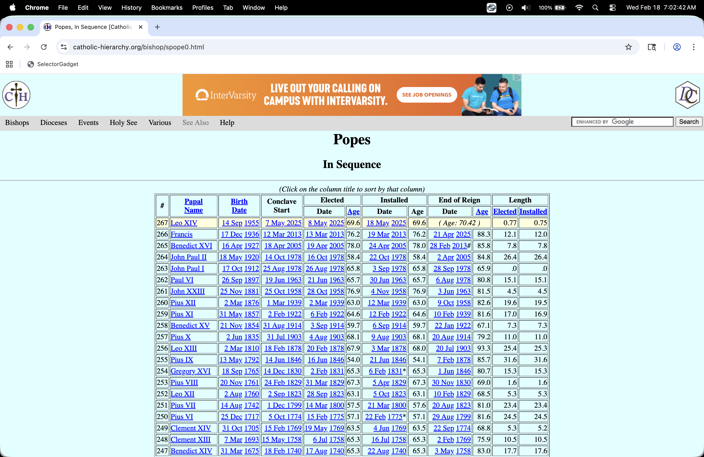
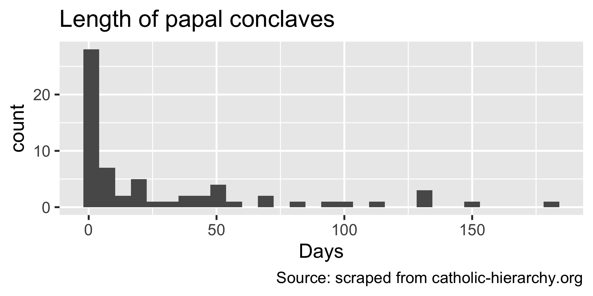
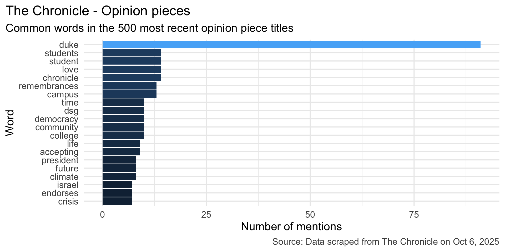
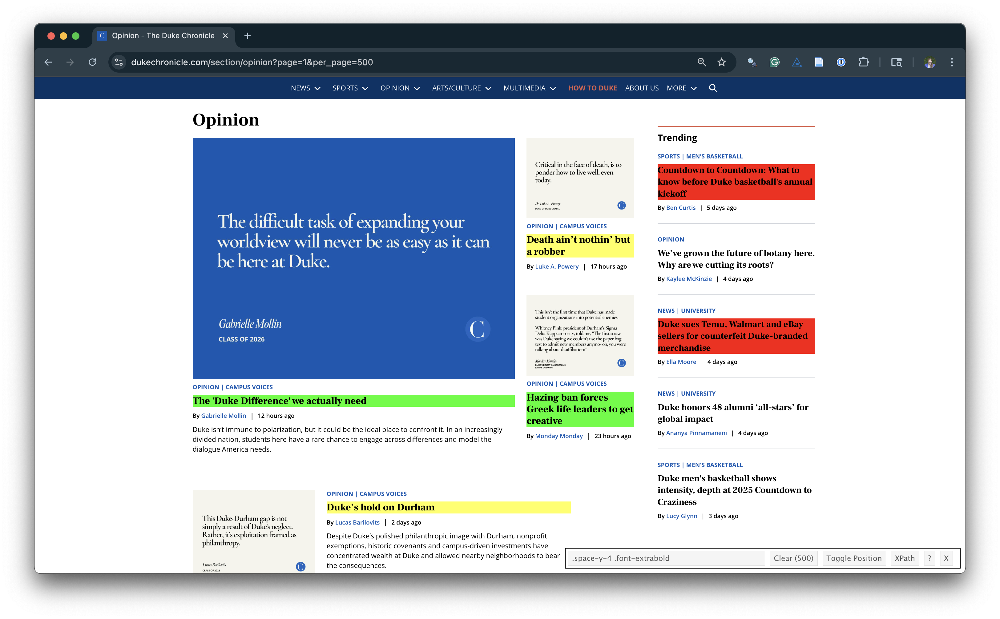
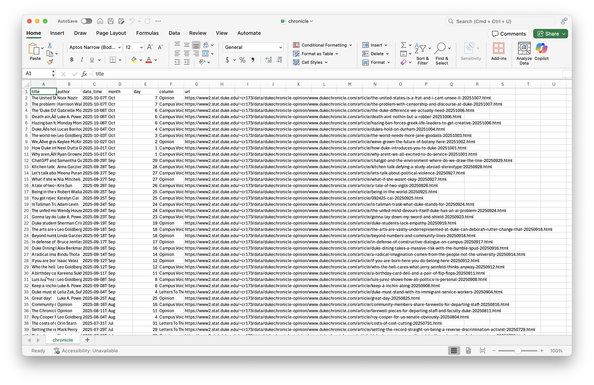

Web scraping
Lecture 11
While you wait: Participate 📱💻
How old were you on February 11 2013?
Scan the QR code or go HERE. Log in with your Duke NetID.
Download Chrome web browser if you don’t have it already, and add the SelectorGadget to the bookmarks bar.
Story time
Time-to-event data
Measuring how long it takes for something to happen:
- How long until the patient recovers from surgery?
- How long until the patient dies?
- How long until the lightbulb burns out?
- How long until laptop battery dies?
- How long after infection until symptoms kick in?
- How long until next call in call center?
- How long until you find your next job?
- How long until volcano erupts again?
A brief history of time
- Feb 11 2013: Pope Benedict announces resignation;
- JZ is a freshman in college;
- Feb 28 2013: Pope Benedict resigns;
- Mar 12 2013: Conclave begins;
- Mar 13 2013: Jorge Bergolio (Pope Francis) elected;
- Summer 2015: JZ’s summer internship involves a ton of web scraping;
- He then forgets it all for ten years;
- Apr 21 2025: Pope Francis dies;
- May 05 2025: JZ submits last spring’s final grades;
- May 07 2025: Conclave begins;
- May 08 2025: Robert Prevost (Pope Leo XIV) elected;
- JZ momentarily emerges from his end-of-semester stupor with a question.
How long do conclaves usually last?
. . .
https://catholic-hierarchy.org/bishop/spope0.html
. . .

. . .
How do I…get this?
Reality check
Because the data are already formatted as an honest-to-goodness table, you can successfully highlight the whole table with your cursor, copy it, paste it into an empty Excel spreadsheet, and then clean it by hand.
BUT:
- That’s tedious;
- It’s not reproducible;
- The work you put in is not reusable;
- This method will not generalize to harder tasks like you will see in the AE.
Web scraping
Scraping the web: what? why?
Increasing amount of data is available on the web
These data are provided in an unstructured format: you can always copy&paste, but it’s time-consuming and prone to errors
Web scraping is the process of extracting this information automatically and transform it into a structured dataset
-
Two different scenarios:
Screen scraping: extract data from source code of website, with html parser (easy) or regular expression matching (less easy).
Web APIs (application programming interface): website offers a set of structured http requests that return JSON or XML files.
Hypertext Markup Language
Most of the data on the web is still largely available as HTML - while it is structured (hierarchical) it often is not available in a form useful for analysis (flat / tidy).
<html>
<head>
<title>This is a title</title>
</head>
<body>
<p align="center">Hello world!</p>
<br/>
<div class="name" id="first">John</div>
<div class="name" id="last">Doe</div>
<div class="contact">
<div class="home">555-555-1234</div>
<div class="home">555-555-2345</div>
<div class="work">555-555-9999</div>
<div class="fax">555-555-8888</div>
</div>
</body>
</html>rvest
- The rvest package makes basic processing and manipulation of HTML data straight forward
- It’s designed to work with pipelines built with
|> - rvest.tidyverse.org
rvest
Core functions:
read_html()- read HTML data from a url or character string.html_elements()- select specified elements from the HTML document using CSS selectors (or xpath).html_element()- select a single element from the HTML document using CSS selectors (or xpath).html_table()- parse an HTML table into a data frame.html_text()/html_text2()- extract tag’s text content.html_name- extract a tag/element’s name(s).html_attrs- extract all attributes.html_attr- extract attribute value(s) by name.
html, rvest, & xml2
html <-
'<html>
<head>
<title>This is a title</title>
</head>
<body>
<p align="center">Hello world!</p>
<br/>
<div class="name" id="first">John</div>
<div class="name" id="last">Doe</div>
<div class="contact">
<div class="home">555-555-1234</div>
<div class="home">555-555-2345</div>
<div class="work">555-555-9999</div>
<div class="fax">555-555-8888</div>
</div>
</body>
</html>'. . .
read_html(html){html_document}
<html>
[1] <head>\n<meta http-equiv="Content-Type" content="text/html; charset=UTF-8 ...
[2] <body>\n <p align="center">Hello world!</p>\n <br><div class="name" ...Selecting elements
read_html(html) |> html_elements("p"){xml_nodeset (1)}
[1] <p align="center">Hello world!</p>. . .
read_html(html) |> html_elements("p") |> html_text()[1] "Hello world!". . .
read_html(html) |> html_elements("p") |> html_name()[1] "p". . .
read_html(html) |> html_elements("p") |> html_attrs()[[1]]
align
"center" . . .
read_html(html) |> html_elements("p") |> html_attr("align")[1] "center"CSS selectors
- We will use a tool called SelectorGadget to help us identify the HTML elements of interest by constructing a CSS selector which can be used to subset the HTML document.
. . .
- Some examples of basic selector syntax is below,
| Selector | Example | Description |
|---|---|---|
| .class | .title |
Select all elements with class=“title” |
| #id | #name |
Select all elements with id=“name” |
| element | p |
Select all <p> elements |
| element element | div p |
Select all <p> elements inside a <div> element |
| element>element | div > p |
Select all <p> elements with <div> as a parent |
| [attribute] | [class] |
Select all elements with a class attribute |
| [attribute=value] | [class=title] |
Select all elements with class=“title” |
CSS classes and ids
read_html(html) |> html_elements(".name"){xml_nodeset (2)}
[1] <div class="name" id="first">John</div>
[2] <div class="name" id="last">Doe</div>. . .
read_html(html) |> html_elements("div.name"){xml_nodeset (2)}
[1] <div class="name" id="first">John</div>
[2] <div class="name" id="last">Doe</div>. . .
read_html(html) |> html_elements("#first"){xml_nodeset (1)}
[1] <div class="name" id="first">John</div>Text with html_text() vs. html_text2()
html = read_html(
"<p>
This is the first sentence in the paragraph.
This is the second sentence that should be on the same line as the first sentence.<br>This third sentence should start on a new line.
</p>"
). . .
html |> html_text()[1] " \n This is the first sentence in the paragraph.\n This is the second sentence that should be on the same line as the first sentence.This third sentence should start on a new line.\n "html |> html_text2()[1] "This is the first sentence in the paragraph. This is the second sentence that should be on the same line as the first sentence.\nThis third sentence should start on a new line."HTML tables with html_table()
html_table =
'<html>
<head>
<title>This is a title</title>
</head>
<body>
<table>
<tr> <th>a</th> <th>b</th> <th>c</th> </tr>
<tr> <td>1</td> <td>2</td> <td>3</td> </tr>
<tr> <td>2</td> <td>3</td> <td>4</td> </tr>
<tr> <td>3</td> <td>4</td> <td>5</td> </tr>
</table>
</body>
</html>'. . .
read_html(html_table) |>
html_elements("table") |>
html_table()[[1]]
# A tibble: 3 × 3
a b c
<int> <int> <int>
1 1 2 3
2 2 3 4
3 3 4 5Back to my lil’ project
Pull down the webpage
This is the easy part!
url <- "https://catholic-hierarchy.org/bishop/spope0.html"
page <- read_html(url)
page{html_document}
<html xmlns="http://www.w3.org/1999/xhtml" xmlns:fb="http://ogp.me/ns/fb#">
[1] <head>\n<link rel="home" href="https://www.catholic-hierarchy.org/">\n<me ...
[2] <script src="/cdn-cgi/scripts/7d0fa10a/cloudflare-static/rocket-loader.mi ...
[3] <body bgcolor="#DCFFFF" text="#000000" link="#0000FF" alink="#FF0000" vli ...Parse the table element
Already pretty good!
popes_table <- page |>
html_element("table") |>
html_table(fill = TRUE)
glimpse(popes_table)Rows: 268
Columns: 12
$ `#` <chr> "#", "267", "266", "265", "264", "263", "262", "261", "…
$ PapalName <chr> "PapalName", "Leo XIV", "Francis", "Benedict XVI", "Joh…
$ BirthDate <chr> "BirthDate", "14 Sep 1955", "17 Dec 1936", "16 Apr 1927…
$ ConclaveStart <chr> "ConclaveStart", "7 May 2025", "12 Mar 2013", "18 Apr 2…
$ Elected <chr> "Date", "8 May 2025", "13 Mar 2013", "19 Apr 2005", "16…
$ Elected <chr> "Age", "69.6", "76.2", "78.0", "58.4", "65.8", "65.7", …
$ Installed <chr> "Date", "18 May 2025", "19 Mar 2013", "24 Apr 2005", "2…
$ Installed <chr> "Age", "69.6", "76.2", "78.0", "58.4", "65.8", "65.7", …
$ `End of Reign` <chr> "Date", "( Age: <!--\r\nwriteage(1955,9,14);\r\n//-->70…
$ `End of Reign` <chr> "Age", "( Age: <!--\r\nwriteage(1955,9,14);\r\n//-->70.…
$ Length <chr> "Elected", "<!--\r\nwriteage(2025,5,8);\r\n//-->.7", "1…
$ Length <chr> "Installed", "<!--\r\nwriteage(2025,5,18);\r\n//-->.7",…Let’s clean the colum name
names(popes_table) <- make.unique(names(popes_table))
popes_clean <- popes_table |>
rename(
papal_number = `#`,
papal_name = `PapalName`,
birth_date = `BirthDate`,
conclave_start = `ConclaveStart`,
date_elected = `Elected`,
age_elected = `Elected.1`,
date_installed = `Installed`,
age_installed = `Installed.1`,
date_end = `End of Reign`,
age_end = `End of Reign.1`,
years_elected = `Length`,
years_installed = `Length.1`,
)
glimpse(popes_clean)Rows: 268
Columns: 12
$ papal_number <chr> "#", "267", "266", "265", "264", "263", "262", "261", …
$ papal_name <chr> "PapalName", "Leo XIV", "Francis", "Benedict XVI", "Jo…
$ birth_date <chr> "BirthDate", "14 Sep 1955", "17 Dec 1936", "16 Apr 192…
$ conclave_start <chr> "ConclaveStart", "7 May 2025", "12 Mar 2013", "18 Apr …
$ date_elected <chr> "Date", "8 May 2025", "13 Mar 2013", "19 Apr 2005", "1…
$ age_elected <chr> "Age", "69.6", "76.2", "78.0", "58.4", "65.8", "65.7",…
$ date_installed <chr> "Date", "18 May 2025", "19 Mar 2013", "24 Apr 2005", "…
$ age_installed <chr> "Age", "69.6", "76.2", "78.0", "58.4", "65.8", "65.7",…
$ date_end <chr> "Date", "( Age: <!--\r\nwriteage(1955,9,14);\r\n//-->7…
$ age_end <chr> "Age", "( Age: <!--\r\nwriteage(1955,9,14);\r\n//-->70…
$ years_elected <chr> "Elected", "<!--\r\nwriteage(2025,5,8);\r\n//-->.7", "…
$ years_installed <chr> "Installed", "<!--\r\nwriteage(2025,5,18);\r\n//-->.7"…Discard that funky row at the top
popes_clean <- popes_clean |>
filter(papal_name != "PapalName")
glimpse(popes_clean)Rows: 267
Columns: 12
$ papal_number <chr> "267", "266", "265", "264", "263", "262", "261", "260"…
$ papal_name <chr> "Leo XIV", "Francis", "Benedict XVI", "John Paul II", …
$ birth_date <chr> "14 Sep 1955", "17 Dec 1936", "16 Apr 1927", "18 May 1…
$ conclave_start <chr> "7 May 2025", "12 Mar 2013", "18 Apr 2005", "14 Oct 19…
$ date_elected <chr> "8 May 2025", "13 Mar 2013", "19 Apr 2005", "16 Oct 19…
$ age_elected <chr> "69.6", "76.2", "78.0", "58.4", "65.8", "65.7", "76.9"…
$ date_installed <chr> "18 May 2025", "19 Mar 2013", "24 Apr 2005", "22 Oct 1…
$ age_installed <chr> "69.6", "76.2", "78.0", "58.4", "65.8", "65.7", "76.9"…
$ date_end <chr> "( Age: <!--\r\nwriteage(1955,9,14);\r\n//-->70.3\r\n)…
$ age_end <chr> "( Age: <!--\r\nwriteage(1955,9,14);\r\n//-->70.3\r\n)…
$ years_elected <chr> "<!--\r\nwriteage(2025,5,8);\r\n//-->.7", "12.1", "7.8…
$ years_installed <chr> "<!--\r\nwriteage(2025,5,18);\r\n//-->.7", "12.0", "7.…Sort out the variable types
popes_clean <- popes_clean |>
mutate(
papal_number = as.integer(papal_number),
age_elected = as.numeric(age_elected),
age_installed = as.numeric(age_installed),
age_end = as.numeric(age_end),
years_elected = as.numeric(years_elected),
years_installed = as.numeric(years_installed),
conclave_start = as.Date(conclave_start, format = "%d %b %Y"),
date_elected = as.Date(date_elected, format = "%d %b %Y"),
birth_date = as.Date(birth_date, format = "%d %b %Y"),
date_end = ifelse(papal_name == "Leo XIV", NA, date_end),
resigned = str_detect(date_end, "#"),
date_end = str_remove_all(date_end, "#"),
date_end = as.Date(date_end, format = "%d %b %Y"),
not_bishop = str_detect(date_installed, "\\*"),
date_installed = str_remove_all(date_installed, "\\*"),
date_installed = as.Date(date_installed, format = "%d %b %Y")
)
glimpse(popes_clean)Rows: 267
Columns: 14
$ papal_number <int> 267, 266, 265, 264, 263, 262, 261, 260, 259, 258, 257,…
$ papal_name <chr> "Leo XIV", "Francis", "Benedict XVI", "John Paul II", …
$ birth_date <date> 1955-09-14, 1936-12-17, 1927-04-16, 1920-05-18, 1912-…
$ conclave_start <date> 2025-05-07, 2013-03-12, 2005-04-18, 1978-10-14, 1978-…
$ date_elected <date> 2025-05-08, 2013-03-13, 2005-04-19, 1978-10-16, 1978-…
$ age_elected <dbl> 69.6, 76.2, 78.0, 58.4, 65.8, 65.7, 76.9, 63.0, 64.6, …
$ date_installed <date> 2025-05-18, 2013-03-19, 2005-04-24, 1978-10-22, 1978-…
$ age_installed <dbl> 69.6, 76.2, 78.0, 58.4, 65.8, 65.7, 76.9, 63.0, 64.6, …
$ date_end <date> NA, 2025-04-21, 2013-02-28, 2005-04-02, 1978-09-28, 1…
$ age_end <dbl> NA, 88.3, 85.8, 84.8, 65.9, 80.8, 81.5, 82.6, 81.6, 67…
$ years_elected <dbl> NA, 12.1, 7.8, 26.4, 0.0, 15.1, 4.5, 19.6, 17.0, 7.3, …
$ years_installed <dbl> NA, 12.0, 7.8, 26.4, 0.0, 15.1, 4.5, 19.5, 16.9, 7.3, …
$ resigned <lgl> NA, FALSE, TRUE, FALSE, FALSE, FALSE, FALSE, FALSE, FA…
$ not_bishop <lgl> FALSE, FALSE, FALSE, FALSE, FALSE, FALSE, FALSE, FALSE…Add new variable
Let’s measure the length of each conclave in days:
popes_clean <- popes_clean |>
mutate(
conclave_length_days = as.integer(date_elected - conclave_start)
) |>
relocate(conclave_length_days)
glimpse(popes_clean)Rows: 267
Columns: 15
$ conclave_length_days <int> 1, 1, 1, 2, 1, 2, 3, 1, 4, 3, 4, 2, 2, 50, 35, 26…
$ papal_number <int> 267, 266, 265, 264, 263, 262, 261, 260, 259, 258,…
$ papal_name <chr> "Leo XIV", "Francis", "Benedict XVI", "John Paul …
$ birth_date <date> 1955-09-14, 1936-12-17, 1927-04-16, 1920-05-18, …
$ conclave_start <date> 2025-05-07, 2013-03-12, 2005-04-18, 1978-10-14, …
$ date_elected <date> 2025-05-08, 2013-03-13, 2005-04-19, 1978-10-16, …
$ age_elected <dbl> 69.6, 76.2, 78.0, 58.4, 65.8, 65.7, 76.9, 63.0, 6…
$ date_installed <date> 2025-05-18, 2013-03-19, 2005-04-24, 1978-10-22, …
$ age_installed <dbl> 69.6, 76.2, 78.0, 58.4, 65.8, 65.7, 76.9, 63.0, 6…
$ date_end <date> NA, 2025-04-21, 2013-02-28, 2005-04-02, 1978-09-…
$ age_end <dbl> NA, 88.3, 85.8, 84.8, 65.9, 80.8, 81.5, 82.6, 81.…
$ years_elected <dbl> NA, 12.1, 7.8, 26.4, 0.0, 15.1, 4.5, 19.6, 17.0, …
$ years_installed <dbl> NA, 12.0, 7.8, 26.4, 0.0, 15.1, 4.5, 19.5, 16.9, …
$ resigned <lgl> NA, FALSE, TRUE, FALSE, FALSE, FALSE, FALSE, FALS…
$ not_bishop <lgl> FALSE, FALSE, FALSE, FALSE, FALSE, FALSE, FALSE, …Answer the question!
ggplot(popes_clean, aes(x = conclave_length_days)) +
geom_histogram() +
labs(
x = "Days",
title = "Length of papal conclaves",
caption = "Source: scraped from catholic-hierarchy.org"
)
popes_clean |>
summarize(
mean_length = mean(conclave_length_days, na.rm = T),
median_length = median(conclave_length_days, na.rm = T),
sd_length = sd(conclave_length_days, na.rm = T)
)# A tibble: 1 × 3
mean_length median_length sd_length
<dbl> <dbl> <dbl>
1 30.6 7.5 43.4popes_clean |>
filter(!is.na(conclave_length_days)) |>
count(conclave_length_days) |>
mutate(prop = n / sum(n))# A tibble: 32 × 3
conclave_length_days n prop
<int> <int> <dbl>
1 1 9 0.141
2 2 7 0.109
3 3 8 0.125
4 4 4 0.0625
5 5 2 0.0312
6 6 1 0.0156
7 7 1 0.0156
8 8 3 0.0469
9 12 1 0.0156
10 13 1 0.0156
# ℹ 22 more rowsApplication exercise
Participate 📱💻
How often do you read The Chronicle?
Scan the QR code or go HERE. Log in with your Duke NetID.
Reading The Chronicle
What do you think is the most common word in the titles of The Chronicle opinion pieces?
Analyzing The Chronicle

Reading The Chronicle
How do you think the sentiments in opinion pieces in The Chronicle compare across authors? Roughly the same? Wildly different? Somewhere in between?
Analyzing The Chronicle

All of this analysis is done in R!
(mostly) with tools you already know!
Common words in The Chronicle titles
Code for the earlier plot:
stop_words <- read_csv("data/stop-words.csv")
chronicle |>
tidytext::unnest_tokens(word, title) |>
mutate(word = str_replace_all(word, "’", "'")) |>
anti_join(stop_words) |>
count(word, sort = TRUE) |>
filter(word != "duke's") |>
slice_head(n = 20) |>
mutate(word = fct_reorder(word, n)) |>
ggplot(aes(y = word, x = n, fill = log(n))) +
geom_col(show.legend = FALSE) +
theme_minimal(base_size = 16) +
labs(
x = "Number of mentions",
y = "Word",
title = "The Chronicle - Opinion pieces",
subtitle = "Common words in the 500 most recent opinion piece titles",
caption = "Source: Data scraped from The Chronicle on Oct 6, 2025"
) +
theme(
plot.title.position = "plot",
plot.caption = element_text(color = "gray30")
)Avg sentiment scores of titles
Code for the earlier plot:
afinn_sentiments <- read_csv("data/afinn-sentiments.csv")
chronicle |>
tidytext::unnest_tokens(word, title, drop = FALSE) |>
mutate(word = str_replace_all(word, "’", "'")) |>
anti_join(stop_words) |>
left_join(afinn_sentiments) |>
group_by(author, title) |>
summarize(total_sentiment = sum(value, na.rm = TRUE), .groups = "drop") |>
group_by(author) |>
summarize(
n_articles = n(),
avg_sentiment = mean(total_sentiment, na.rm = TRUE),
) |>
filter(n_articles > 2 & !is.na(author)) |>
arrange(desc(avg_sentiment)) |>
slice(c(1:10, 30:39)) |>
mutate(
author = fct_reorder(author, avg_sentiment),
neg_pos = if_else(avg_sentiment < 0, "neg", "pos"),
label_position = if_else(neg_pos == "neg", 0.25, -0.25)
) |>
ggplot(aes(y = author, x = avg_sentiment)) +
geom_col(aes(fill = neg_pos), show.legend = FALSE) +
geom_text(
aes(x = label_position, label = author, color = neg_pos),
hjust = c(rep(1, 10), rep(0, 10)),
show.legend = FALSE,
fontface = "bold"
) +
geom_text(
aes(label = round(avg_sentiment, 1)),
hjust = c(rep(1.25, 10), rep(-0.25, 10)),
color = "white",
fontface = "bold"
) +
scale_fill_manual(values = c("neg" = "#4d4009", "pos" = "#FF4B91")) +
scale_color_manual(values = c("neg" = "#4d4009", "pos" = "#FF4B91")) +
coord_cartesian(xlim = c(-2, 2)) +
labs(
x = "negative ← Average sentiment score (AFINN) → positive",
y = NULL,
title = "The Chronicle - Opinion pieces\nAverage sentiment scores of titles by author",
subtitle = "Top 10 average positive and negative scores",
caption = "Source: Data scraped from The Chronicle on Sep 30, 2024"
) +
theme_void(base_size = 16) +
theme(
plot.title = element_text(hjust = 0.5),
plot.subtitle = element_text(
hjust = 0.5,
margin = unit(c(0.5, 0, 1, 0), "lines")
),
axis.title.x = element_text(color = "gray30", size = 12),
plot.caption = element_text(color = "gray30", size = 10)
)Where is the data coming from?
Where is the data coming from?
chronicle# A tibble: 500 × 7
title author date_time month day column url
<chr> <chr> <dttm> <chr> <dbl> <chr> <chr>
1 The United States is a f… Noor … 2025-10-07 10:00:00 Oct 7 Opini… http…
2 The problem with censors… Harri… 2025-10-07 10:00:00 Oct 7 Campu… http…
3 The 'Duke Difference' we… Gabri… 2025-10-06 14:30:00 Oct 6 Campu… http…
4 Death ain’t nothin’ but … Luke … 2025-10-06 10:00:00 Oct 6 Campu… http…
5 Hazing ban forces Greek … Monda… 2025-10-06 04:00:00 Oct 6 Campu… http…
6 Duke’s hold on Durham Lucas… 2025-10-04 10:00:00 Oct 4 Campu… http…
7 The world needs more Jan… Leo G… 2025-10-03 10:00:00 Oct 3 Campu… http…
8 We’ve grown the future o… Kayle… 2025-10-02 14:00:00 Oct 2 Opini… http…
9 How Duke introduces you … Neel … 2025-10-01 10:00:00 Oct 1 Campu… http…
10 Why aren’t we all excite… Ryan … 2025-10-01 10:00:00 Oct 1 Campu… http…
# ℹ 490 more rowsSelectorGadget
SelectorGadget (selectorgadget.com) is a javascript based tool that helps you interactively build an appropriate CSS selector for the content you are interested in.

Opinion articles in The Chronicle
Go to https://www.dukechronicle.com/section/opinion?page=1&per_page=500.
How many articles are on the page?
Goal
- Scrape data and organize it in a tidy format in R
- Perform light text parsing to clean data
- Summarize and visualze the data

A new R workflow
When working in a Quarto document, your analysis is re-run each time you knit
If web scraping in a Quarto document, you’d be re-scraping the data each time you knit, which is undesirable (and not nice)!
-
An alternative workflow:
- Use an R script to save your code
- Saving interim data scraped using the code in the script as CSV or RDS files
- Use the saved data in your analysis in your Quarto document
ae-11-chronicle-scrape
Go to your ae project in RStudio.
If you haven’t yet done so, make sure all of your changes up to this point are committed and pushed, i.e., there’s nothing left in your Git pane.
If you haven’t yet done so, click Pull to get today’s application exercise file: ae-11-chronicle-scrape.qmd and
chronicle-scrape.R.